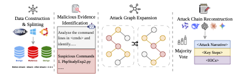
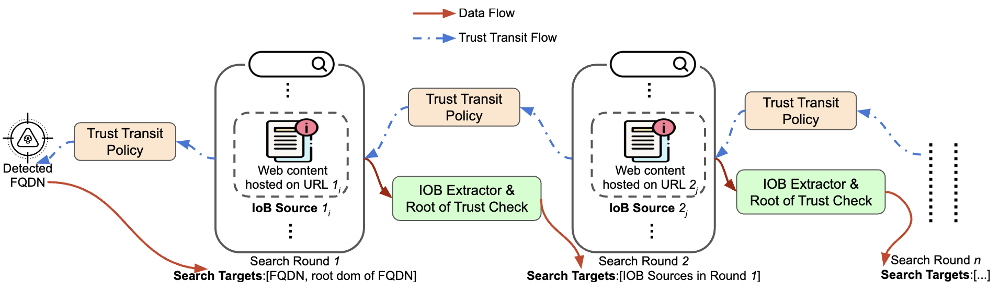
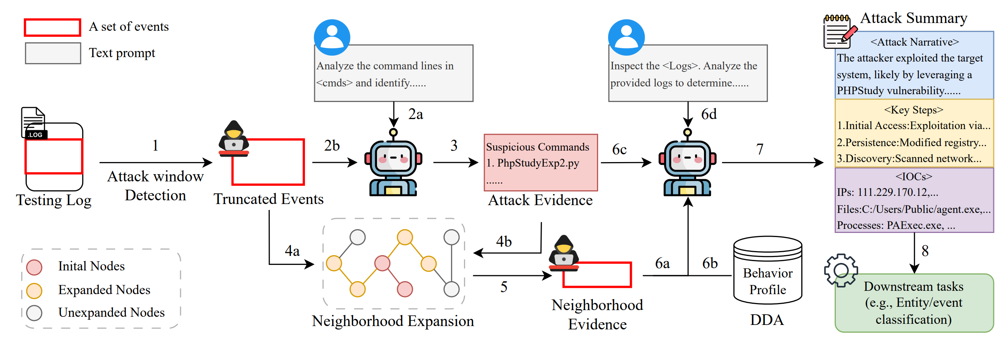
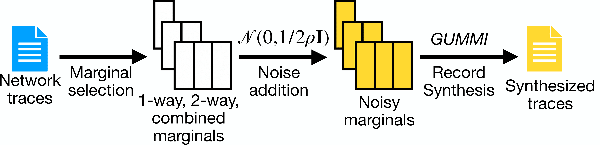
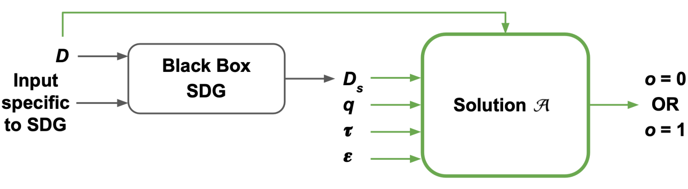

News
- Apr 2026: I won the UCI EECS Graduate Student of the Year Award (2025-2026)!
- Mar 2026: I will start my internship at Roblox this summer. See you at San Mateo!
- Feb 2026: One paper related to "False Positive in Malicious Domain" got Distinguished Paper Award of NDSS 2026!
|
|

|
HIDBench: Benchmarking Large Language Models for Host-Based Intrusion Detection
Danyu Sun, Jinghuai Zhang, Yuan Tian, Zhou Li
Pre-print, 2026
[PDF]
|
|

|
Indicator of Benignity: An Industry View of False Positive in Malicious Domain Detection and its Mitigation
Daiping Liu, Danyu Sun, Zhenhua Chen, Shu Wang, Zhou Li
NDSS, 2026 🏆 Distinguished Paper Award
[PDF]
[Data]
|
|

|
From Alerts to Intelligence: A Novel LLM-Aided Framework for Host-based Intrusion Detection
Danyu Sun, Jinghuai Zhang, Jiacen Xu, Yu Zheng, Yuan Tian, Zhou Li
Pre-print, 2025
[PDF]
|
|

|
NetDPSyn: Synthesizing Network Traces under Differential Privacy
Danyu Sun, Joann Qiongna Chen, Chen Gong, Tianhao Wang, Zhou Li
ACM IMC, 2024
[PDF]
[Code]
|
|

|
DP-PQD: Privately Detecting Per-Query Gaps In Synthetic Data Generated By Black-Box Mechanisms
Shweta Patwa, Danyu Sun, Amir Gilad, Ashwin Machanavajjhala, Sudeepa Roy
VLDB, 2024
[PDF]
|
Honors & Awards
- UCI EECS Graduate Student of the Year award 2025-2026.
- NDSS 2026 Distinguished Paper Award.
- UCI Henry Samueli Endowed Fellowship, 2023-2024.
- UCI Graduate Dean’s Recruitment Fellowship, Fall 2023.
- Dean’s List at UIUC, 2019-2021.
|
Service
- Served as a peer reviewer for ICML 2025
- Served as a peer reviewer for NeurIPS 2025, 2024
- Served as a peer reviewer for ICLR 2025
- Served as a peer reviewer fo AISTATS 2025
|
Teaching Experience
- EECS 148/CS 132: Computer Network (2026 Spring, UCI)
- EECS 148/CS 132: Computer Network (2025 Spring, UCI)
- Compsci 101: Introduction to Computer Science (2021 Fall to 2023 Spring, Duke University)
|
Industry Experience
- Applied Scientist Internship (06/2026--09/2026, Roblox, San Mateo)
- Research Scientist Internship (06/2025--09/2025, Bytedance, San Jose)
|
|